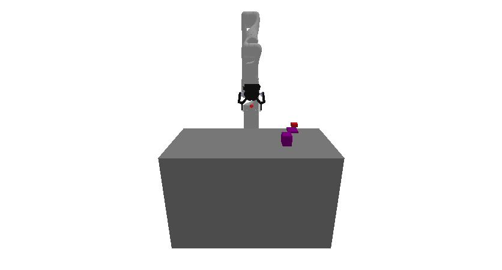
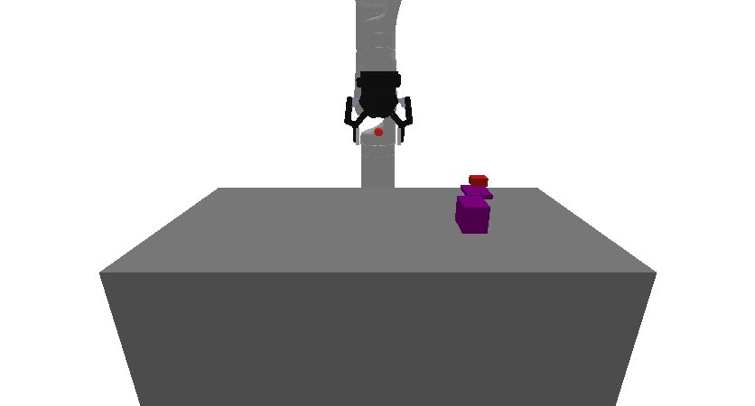

prbench/Obstruction3D-o1-v0
Random Actions
Initial State Distribution
Environment Group Description
A 3D environment where the goal is to place a target block onto a target surface. The block must be completely contained within the surface boundaries. The target may be obstructed by one or more obstacles. An object can be grasped and ungrasped when the sphere between the end effector fingers makes contact with it.
Variant Description
There is always 1 obstacle.
Observation Space
The entries of an array in this Box space correspond to the following object features:
| Index | Object | Feature |
|---|---|---|
| 0 | robot | joint_1 |
| 1 | robot | joint_2 |
| 2 | robot | joint_3 |
| 3 | robot | joint_4 |
| 4 | robot | joint_5 |
| 5 | robot | joint_6 |
| 6 | robot | joint_7 |
| 7 | robot | finger_state |
| 8 | robot | grasp_active |
| 9 | robot | grasp_tf_x |
| 10 | robot | grasp_tf_y |
| 11 | robot | grasp_tf_z |
| 12 | robot | grasp_tf_qx |
| 13 | robot | grasp_tf_qy |
| 14 | robot | grasp_tf_qz |
| 15 | robot | grasp_tf_qw |
| 16 | target_region | pose_x |
| 17 | target_region | pose_y |
| 18 | target_region | pose_z |
| 19 | target_region | pose_qx |
| 20 | target_region | pose_qy |
| 21 | target_region | pose_qz |
| 22 | target_region | pose_qw |
| 23 | target_region | grasp_active |
| 24 | target_region | half_extent_x |
| 25 | target_region | half_extent_y |
| 26 | target_region | half_extent_z |
| 27 | target_block | pose_x |
| 28 | target_block | pose_y |
| 29 | target_block | pose_z |
| 30 | target_block | pose_qx |
| 31 | target_block | pose_qy |
| 32 | target_block | pose_qz |
| 33 | target_block | pose_qw |
| 34 | target_block | grasp_active |
| 35 | target_block | half_extent_x |
| 36 | target_block | half_extent_y |
| 37 | target_block | half_extent_z |
| 38 | obstruction0 | pose_x |
| 39 | obstruction0 | pose_y |
| 40 | obstruction0 | pose_z |
| 41 | obstruction0 | pose_qx |
| 42 | obstruction0 | pose_qy |
| 43 | obstruction0 | pose_qz |
| 44 | obstruction0 | pose_qw |
| 45 | obstruction0 | grasp_active |
| 46 | obstruction0 | half_extent_x |
| 47 | obstruction0 | half_extent_y |
| 48 | obstruction0 | half_extent_z |
Action Space
An action space for a 7 DOF robot that can open and close its gripper.
Rewards
A penalty of -1.0 is given at every time step until termination, which occurs when the target block is "on" the target surface.
References
Similar environments have been used many times, especially in the task and motion planning literature. We took inspiration especially from the "1D Continuous TAMP" environment in PDDLStream.